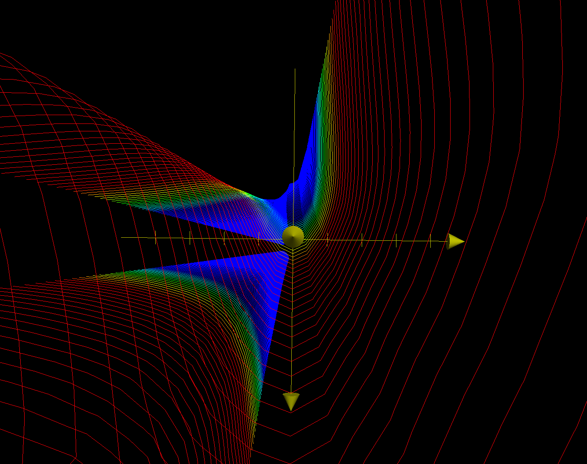

Backlinks
1 nth-derivatives
\begin{align} f_{x} =& 8xy^5 + 9x^2y^2 \\ f_{y} =& 20x^2y^4 + 6x^3y \\ f_{xx} =& 8y^5 + 18xy^2 \\ f_{yy} =& 80x^2y^3 + 6x^3 \\ f_{xy} =& 40xy^4 + 18x^2y \\ f_{xxx} =& 18y^2 \\ f_{yyy} =& 240x^2y^2 \\ f_{xxy} =& 40y^4 + 36xy \\ f_{yyx} =& 160xy^3 + 18x^2 \end{align}Find all of the first, second, and third partial derivatives of this function (including the mixed ones):
\begin{equation} f(x,y) = 4x^2y^5+3x^3y^2 \end{equation}
2 Jacobian Derivative Matrix
2.1 \(f(x,y) = \frac{xy}{x^2+y^2}\)
2.2 \(f(x,y,z) = [xy+2yz,2x^2y^2]\)
3 Total First Derivatives
Suppose you have a function \(\mathbb{R}^2 \to \mathbb{R}^1\), how many total first partial derivatives does it have? What about second partial derivatives? … What about k'th partial derivatives.
For a function \(\mathbb{R}^2 \to \mathbb{R}^1\), it has \(2\) first partial derivatives, \(3\) second partial derivatives, \(4\) third partial derivatives, and \(k+1\) k-th partial derivatives.
4 Multi-Variable Slopes
Plot of the manifold:

Plot of the contours:


4.1 Steepness of function at \([-\frac{\sqrt{3}}{2}, \frac{1}{2}]\)
The gradient at the \((1,2)\), as a vector, is \([39, 64]\)
4.1.1 Steepness of the Function at Point
Projecting that onto the direction of \([-\frac{\sqrt{3}}{2}, \frac{1}{2}]\) would result in:
\begin{equation} \begin{bmatrix} 39 \\ 64 \end{bmatrix} \cdot \begin{bmatrix} -\frac{\sqrt{3}}{2}\\ \frac{1}{2} \end{bmatrix} = \frac{64-39\sqrt{3}}{2} \end{equation}Hence, \(\frac{64-39\sqrt{3}}{2}\) is the "slope" of the function at \((1,2)\) facing \([-\frac{\sqrt{3}}{2}, \frac{1}{2}]\). The angle of which the slope represents, therefore, would be \(arctan(\frac{64-39\sqrt{3}}{2}) \approx -60.60^{\circ}\).
4.2 Optimizing for steepness
We want to figure an angle \(\theta\) such that the gradient would be most steep, that is, a \(\theta\) such that…
\begin{equation} 39cos{\theta} + 64sin{\theta} \end{equation}is maximized. We know that there exists a \(\theta_{max}\) such that this expression would be maximized, meaning that if there exists a critical point for this expression we would arrive as such an optima.
The derivative w.r.t. \(\theta\) of the expression above is
\begin{equation} -39 sin \theta + 64 cos \theta \end{equation}Solving for a value of that expression at \(0\) to arrive at a critical point,
\begin{align} & 64 cos \theta = 0 \\ \Rightarrow\ &64 cos \theta = 39 sin \theta \\ \Rightarrow\ &\frac{64}{39} = \frac{sin \theta}{cos \theta} \\ \Rightarrow\ &\frac{64}{39} = tan \theta \\ \Rightarrow\ &\theta = arctan (\frac{64}{39}) \approx 58.64^{\circ} \end{align}Hence, the angle at which the steepness would be optimized would be \(58.64^{\circ}\). Note also that the direction that the gradient is pointing is steepest.
4.3 Optimizing for flatness
Similar to before, we want to figure an angle \(\theta\) such that the value of the slope at that point would be \(0\), that is:
\begin{equation} 39cos{\theta} + 64sin{\theta} = 0 \end{equation}Solving for the value of \(\theta\) in this expression:
\begin{align} & 39cos{\theta} + 64sin{\theta} = 0 \\ \Rightarrow\ & 64sin{\theta} = -39cos{\theta} \\ \Rightarrow\ & tan{\theta} = \frac{-39}{64} \\ \Rightarrow\ & \theta = arctan(\frac{-39}{64}) \approx -31.36^{\circ} \end{align}Hence, the angle at which the steepness would be minimized would be \(-31.36^{\circ}\).
Note also that this is the vector for with the dot with the steepest vector is zero. That's "orthogonal", and hence the flattest angle.